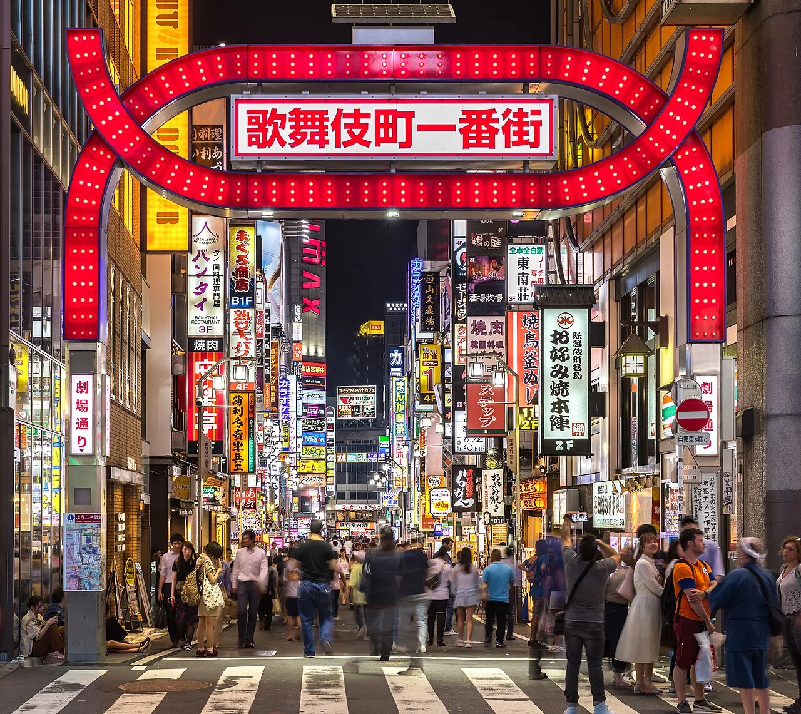
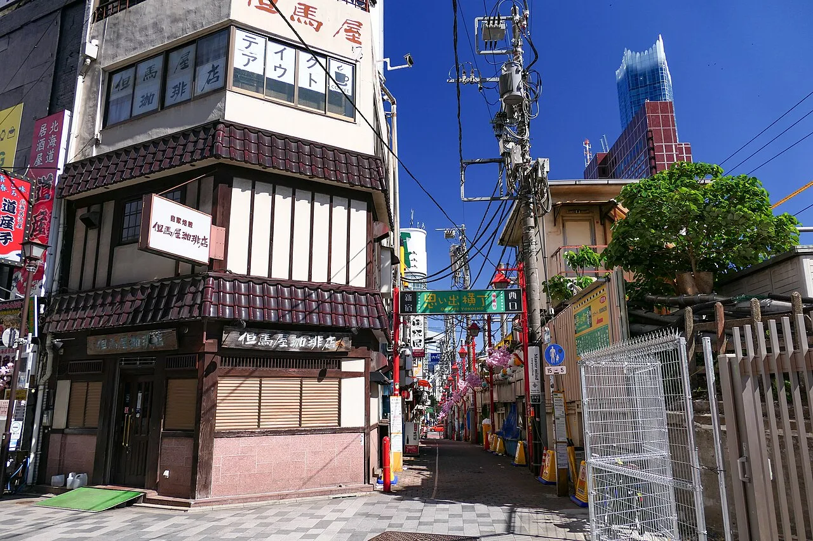
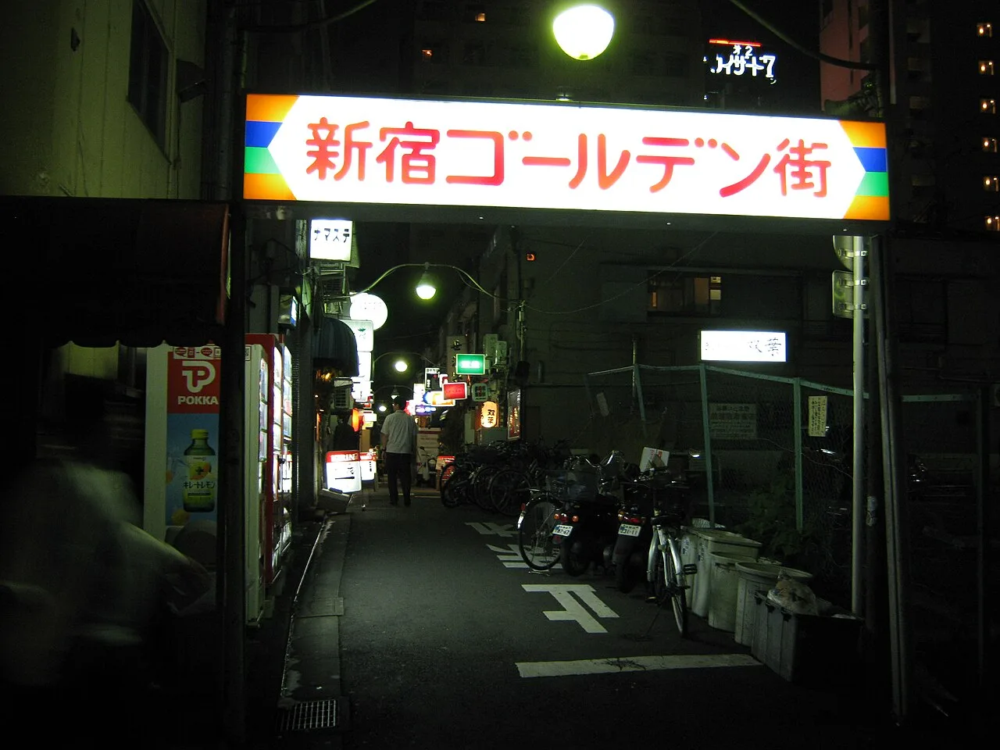

28.10, среда
прилёт
Нарита, Синдзюку, первый неон
Narita Express довозит до Синдзюку примерно за 85 минут, в городе будем к половине третьего. На вечер ничего серьёзного: неон Кабукитё и ужин в Omoide Yokocho, переулке на полсотни идзакай у путей
Если после перелёта останутся силы, заглянем в Golden Gai по соседству: квартал двухсот крошечных баров на шесть мест каждый. Внутрь идти не обязательно, он и снаружи работает как музей под открытым небом



1 / 3